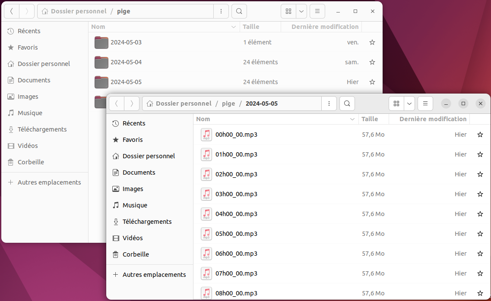
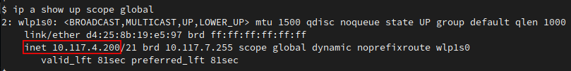
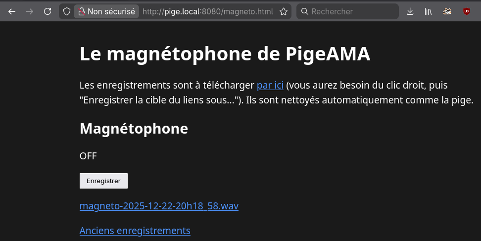

PigeAMA, pour Pige d’Antenne Marchant Automatiquement (mais surtout pour le jeux de mots), est un outil d’installation d’une pige d’antenne pensé pour les radios associatives. Il intègre aussi une petite page “magnétophone” pour avoir des fichiers pré-découpés à la demande. En partant d’un ordinateur sous Linux, il installe et configure des logiciels libres :
PigeAMA ne sert qu’à l’installation : ensuite ça enregistre et ça continuera de le faire pendant longtemps. Libre à vous de modifier ce qui est installé, par exemple pour changer les moyens d’accès aux enregistrements ou envoyer le flux sonore vers un Icecast.
Prenez un ordinateur de récup (en France, par exemple chez AFB, Ecodair ou TradeDiscount) car il n’y a pas besoin d’une machine puissante ni hyper-fiable. Il faut surtout un ordinateur avec une carte son, que vous pouvez régler pour démarrer dès qu’il a du courant et qui contienne un ou deux disques durs. D’ailleurs LE critère est le volume de disque disponible, qui sera lié au format de fichiers que vous souhaitez utiliser :
| Format | Espace à prévoir pour 31 jours |
|---|---|
| WAV | 500 Go |
| FLAC | 250 Go |
| MP3 (192kbps) | 75 Go |
PigeAMA est conçu pour être installé sur Linux, sur une
distribution Debian ou dérivées : Ubuntu, Mint, … tout ce qui utilise
apt. L’ordinateur doit avoir accès à Internet au
moment de l’installation (mais pas forcément ensuite).
Pensez à régler la machine pour qu’elle démarre dès qu’elle est reliée au secteur. En général c’est une option qui se trouve dans les menus du BIOS, accessible quand la machine démarre (en appuyant sur F1/F2/F10/DEL/…).
Il y a quelques commandes à recopier dans un terminal : appuyez sur Entrée à la fin de la ligne.
Téléchargez l’installeur :
wget https://git.sr.ht/~martink/pigeama/blob/main/src/pigeama.shAutorisez l’éxécution de l’installateur :
chmod +x pigeama.shC’est parti :
NBJOURS=31 FORMATPIGE=flac ./pigeama.shCi-dessus, nous précisons les deux options possibles :
NBJOURS indique la durée de conservation des fichiers,
en nombre de jours. Par défaut il vaut 31, pour être conforme à la pige
légale Arcom/CSA. Vous pouvez mettre plus, selon l’espace disque
disponible (cf. le tableau ci-dessus).FORMATPIGE indique le format des fichiers enregistrés.
Vous pouvez utiliser flac, wav ou
mp3. Le MP3 est réglé à 192kbps, vous pourrez modifier cela
après l’installation. L’installeur utilisera le même format pour le
magnétophone intégré, mais cela sera modifiable aussi.Après installation, l’ordinateur va redémarrer, puis enregistrer en continu. Vérifiez que l’enregistrement fonctionne bien juste après l’installation, mais aussi mensuellement. Vous pouvez aussi apporter quelques modifications à l’installation.
L’enregistreur écrit dans votre répertoire personnel, dans un dossier
pige. A l’intérieur il y aura un dossier par jour, puis un
fichier par heure. Seul le fichier en cours d’écriture est ouvert : vous
pouvez faire ce que vous voulez des autres. Les plus anciens seront
effacés automatiquement.

Normalement, la pige partage aussi sur le réseau local à l’adresse http://pige.local/. Cette adresse doit aussi fonctionner pour le partage de fichiers (avec Samba). Sinon vous pouvez aussi utiliser l’adresse IP :
Si votre pige est reliée à un réseau local (via une box Internet, par
exemple) elle rend accessible les fichiers enregistrés aux autres
ordinateurs sur ce réseau. Vous allez avoir besoin de son adresse IP.
Vous pouvez l’afficher en tapant la commande
ip a show up scope global, ce sont les 4 chiffres après
inet :

Dans les exemples ci-dessous, nous utiliserons l’adresse 192.168.0.123 : à vous de remplacer par la votre.
Vous pouvez écouter ou télécharger les fichiers enregistrés avec un
navigateur Web, en vous rendant sur http://pige.local/ ou à l’adresse de la
machine, par exemple http://192.168.0.123/
Vous pouvez télécharger les fichiers enregistrés via un partage réseau, en donnant l’adresse de la machine qui pige.
smb://pige.local/pige ou
smb://192.168.0.123/pige.\\pige\pige ou
\\192.168.0.123\pige.Choisissez l’accès anonyme. Cet accès est en lecture seule. Nous vous recommandons de garder ce dossier en Favori sur tous les ordinateurs de la radio.
A l’adresse http://pige.local:8080/magneto.html vous trouverez un magnétophone qui permet d’enregisrer sur demande, dans le même format que le reste de la pige. L’enregistrement se fait dans la machine qui héberge la pige et les fichiers de piges habituels continuent à être enregistrés aussi.

Si vous souhaitez utilier ce magnétophone via une autre interface et/ou programmer votre propre logique de début et fin d’enregistrement, vous devrez trouver un moyen de faire des requêtes HTTP:
POST http://pige.local:8080/magneto pour démarrer
l’enregistrement. Cela répond avec une erreur 400 si l’enregistrement
est déjà en cours, ou 200 OK.DELETE http://pige.local:8080/magneto pour arrêter
l’enregistrement. Le texte de la réponse contiendra le nom du fichier
qui a été enregistré. S’il n’y avait pas d’enregistrement en cours, le
magnéto répond par une erreur 400.Sur la pige, vous trouverez dans le répertoire personnel quelques fichiers qui peuvent être intéressants si vous souhaitez la modifier ou en cas de problème.
installation.log est une trace de tout ce qui a été
affiché pendant l’installation. Il ne sert qu’en cas de problème : une
fois l’installation rodée, vous pouvez le supprimer.pige.log trace ce qui se passe dans l’enregistreur. Il
sont archivés puis effacés automatiquement, leur contenu peut servir si
la pige ne marche pas bien.nettoyeur_pige.sh est le script qui efface les
enregistrements au-delà d’un certain âge. Il est exécuté automatiquement
chaque jour. Si vous souhaitez changer la durée de conservation, c’est
là que ça se passe : le nombre de jours est juste après le
-mtime.pige.liq est le script Liquidsoap qui s’occupe de
l’enregistrement, on en reparle ci-dessous.magneto.html est dans le répertoire de la pige: c’est
l’interface du magnétophone.Les services systèmes installés par PigeAMA sont définis par des
fichiers placés dans le répertoire utilisateur, dans
~/.config/systemd/user/.
L’enregistrement est réalisé par un script Liquidsoap : le fichier
pige.liq. Vous pouvez l’ouvrir avec un éditeur de texte. Ce
script contient beaucoup de commentaires : ce sont les lignes qui
commencent par un #. Ces lignes sont ignorées par
Liquidsoap et nous permettent d’inclure des notes, des explications, ou
des exemples.
⚠️ Avant toute modification du fichier pige.liq,
faites-en une copie de sauvegarde pour pouvoir revenir à une version
fonctionnelle, au cas où. Vous pouvez aussi utiliser un gestionnaire de
versions, comme Git.
Ce script est aussi capable d’envoyer le flux sonore vers un serveur de streaming Icecast. Il peut à la fois enregistrer des fichiers et envoyer vers Icecast, ou ne faire que l’un des deux, ou encore envoyer vers plusieurs Icecast avec des format différents.
A la fin du fichier, vous trouverez un bloc qui ajoute une sortie
vers Icecast. Mais ce bloc est caché derrière des #. Pour
activer la sortie Icecast, retirez-les et remplissez les paramètres
correspondant à votre serveur : point de montage, addresse, utilisateur,
mot de passe.
C’est aussi dans ce script qu’on choisit le format des fichiers, ou du flux Icecast. Il y a déjà quelques exemples en commentaire. Pour plus de détails, voyez la page de documentation Liquidsoap sur les formats.
Après toute modification du fichier
pige.liq, vous devez : 1. Vérifier que la
modification est correcte en tapant
liquidsoap --check pige.liq - s’il n’affiche rien, c’est
bon ! 2. Si la modification est correcte, redémarrez le processus de
pige avec la commande systemctl --user restart pige
Si vous utilisez PigeAMA pour envoyer le signal vers Icecast ou autre
chose, il est possible d’appliquer Stereotool sur le signal en entrée.
Cela n’est pas testé, donc si vous le faites pensez à nous le signaler
(les contacts sont en bas de page). Théoriquement, après avoir créé un
fichier de preset il suffirait d’ajouter les lignes suivantes dans le
script pige.liq, juste avant la définition des sorties
:
entree = stereotool(
library_file="/path/to/stereotool/shared/lib",
license_key="my_license_key",
preset="/path/to/preset/file",
entree
)Dans le doute : reboote.
Le détail de ce qui s’est passé lors de l’installation est écrit dans
le fichier installation.log: son contenu peut contenir des
indices. Attachez ce fichier quand vous demandez de l’aide. Relancez
l’installation en ajoutant DEBUG=1 pour avoir encore plus
de détails. Ce qui donne par exemple
DEBUG=1 NBJOURS=31 FORMATPIGE=wav ./pigeama.shOui. Il est possible de relancer le script d’installation sur une machine déjà installée, même avec des réglages différents de format de fichier ou de temps de conservation.
Vous pouvez effectuer les mises à jour habituelles, avec
apt update et apt upgrade. Vérifiez que ça
pige encore correctement après le redémarrage. Si ce n’est pas le cas,
reprenez l’installation depuis le début.
Si vous avez fait des modifications à la main, pensez à garder séparément une copie des fichiers concernés, pour pouvoir rétablir vos modifications après la re-installation.
Lisez les précautions concernants l’édition du script Liquidsoap dans la partie sur Icecast. Dans le script de base, l’entrée sonore est définie par cette ligne :
entree = input.alsa()Si les fichiers ne contiennent que du silence (alors que tout est bien branché, bien entendu) c’est peut-être que l’ordinateur contient plusieurs cartes son et que l’on est pas tombé sur la bonne. Dans ce cas, vous pouvez essayer deux variantes de la ligne de l’entrée sonore :
entree = input.pulseaudio(). Vous pouvez
alors choisir l’entrée dans la partie “Son” des paramètres système.entree = input.alsa(device='hw:1,0'). Le premier chiffre
est le numéro de carte son, le deuxième est le numéro de périphérique
dans la carte. Les compteurs commencent à 0, donc l’exemple pointe la
première entrée de la deuxième carte son. Pour lister les possibilités,
utilisez la commande arecord -l.Vous pouvez aussi aller voir si la question n’a pas déjà été posée sur la mailing-list, ou poser votre question.
PigeAMA est hébergé par Sourcehut. Vous pouvez suggérer des modifications ou poser des questions à la mailing-list de PigeAMA: ~martink/pigeama@lists.sr.ht * Si vous souhaitez recevoir cette mailing-list, pour donner un coup de main ou recevoir des nouvelles du projet, envoyez un e-mail (même vide) à ~martink/pigeama+subscribe@lists.sr.ht * Si vous souhaitez vous désinscrire plus tard, envoyez un e-mail à ~martink/pigeama+unsubscribe@lists.sr.ht